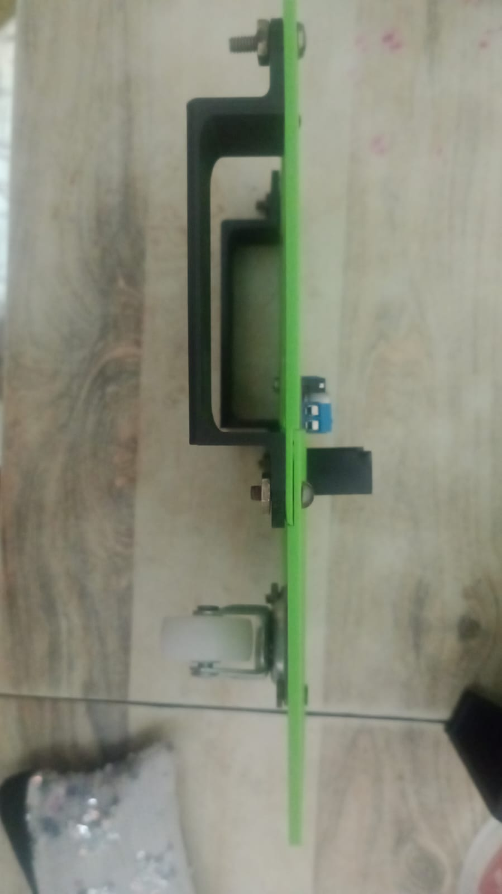
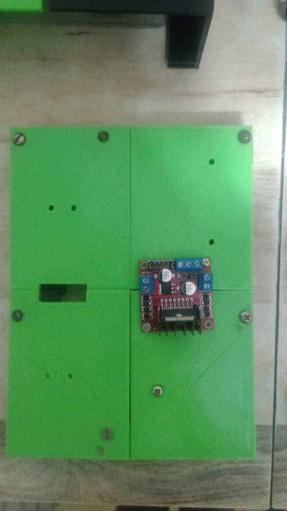
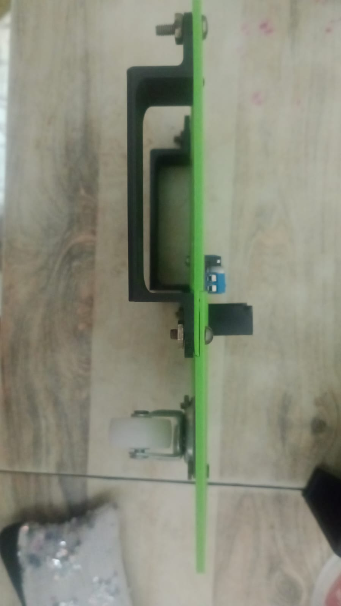
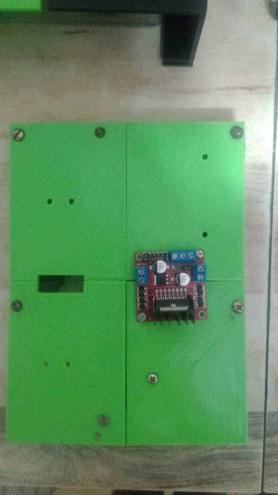
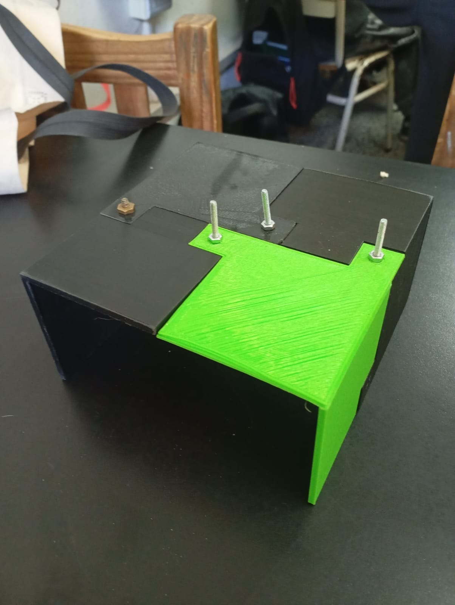
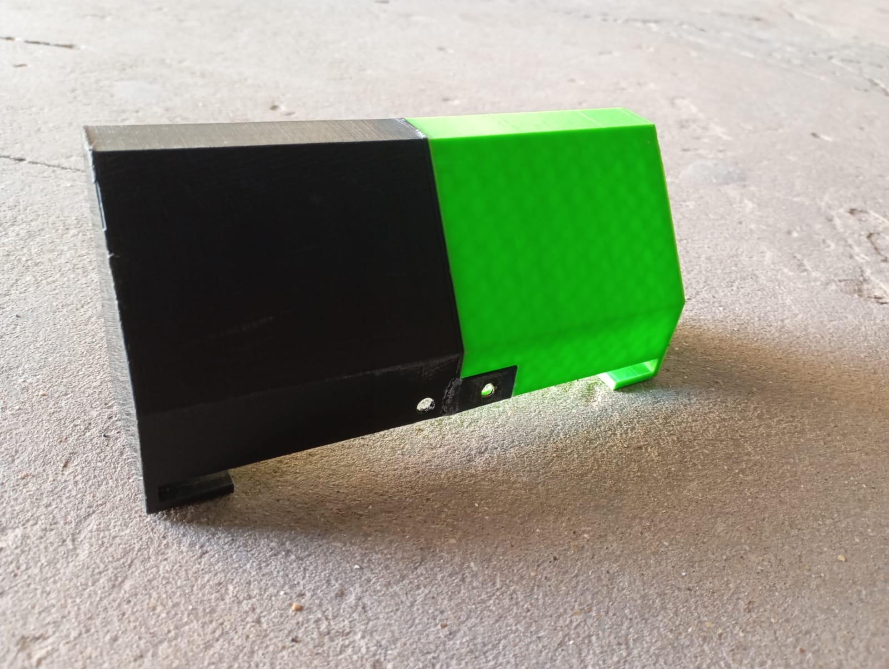
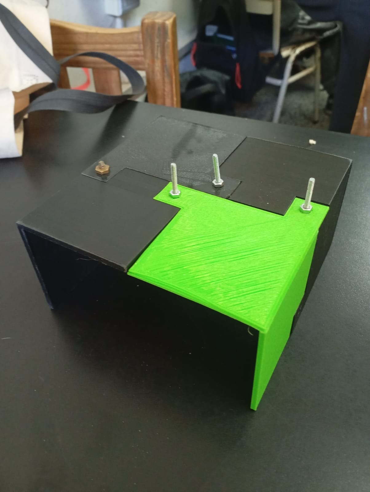
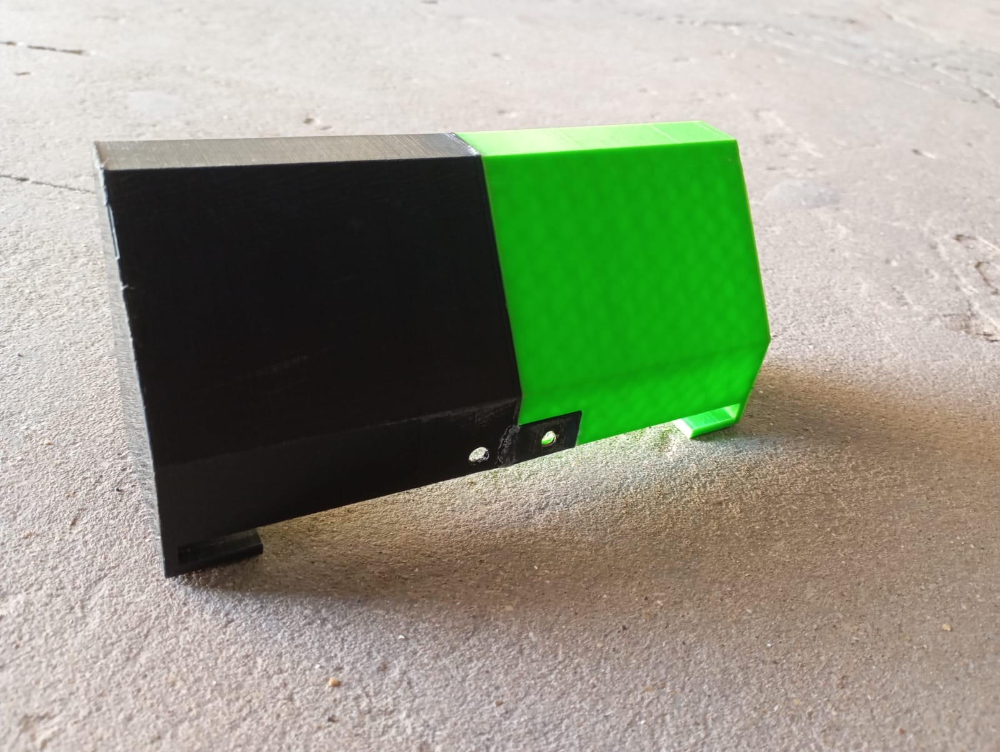

Al inicio del proyecto Tito, nuestro robot, ya estaba armado, tenía como base una chapa y todas las conexiones listas, solo le tuvimos que cargar el código, pero al momento de hacerlo andar tuvimos problemas con el porta pilas, el cual arreglamos fácilmente. Una vez en funcionamiento lo presentamos para la fiesta del 25 de mayo, tapamos todos los circuitos con tapas de plásticos de cuadernillos que teníamos en nuestras casas y le dimos forma de auto, lo decoramos y ahí termina esta parte.
luego tuvimos que desarmarlo para hacer todo a base de impresiones 3D, tanto la base, como la carrocería, etc. Decidimos empezar por la base que sostiene todas las placas, para diseñarlo nos inspiramos mucho en el diseño antiguo que tenía nuestro robot, pensamos en hacer 4 partes rectangulares, ya que las impresoras son pequeñas y además ahorrar tiempo y material, en caso de que algo salga mal, para unirse, estas en las esquinas tendrán un encastre que además se afirmara con tornillos y tuercas. Primero esto fue diseñado en papel para ver dónde poner las placas y así hacer los agujeros, tiñendo eso, ya empezamos el modelado 3D en TinkerCad y lo imprimimos, las impresiones salieron bien, solo que cuando las unimos vimos que en el centro no aguantaba tanto.
A la vez pensamos en el soporte de los motores de las ruedas, lo diseñamos primero en papel y lo imprimimos y salieron bien.

 



Armamos todas las piezas para ver si encastraban bien, le agregamos el arduino y el resto de placas, para ver si todas las placas cuadraban bien, ahí nos dimos cuenta que algunos agujeros quedaban mal, pero ya tenemos una solución pensada para eso, también agregamos una rueda en el frente, esta es fija y solamente sirve para que el robot pueda girar bien.
Luego de tener todo eso listo y sacarnos las dudas de que la base funcione bien, pasamos a diseñar la carrocería de este, esta se divide en dos partes, parte de adelante y parte de atrás, a su vez cada una se vuelve a dividir, por la misma razón que dijimos antes, el tema del espacio a la hora de imprimir y la reducción de material y tiempo, la parte de adelante está dividida en dos partes y la parte de atrás se divide en cuatro partes, cada pieza de encastra de la misma manera que la base que antes mencionamos . De estas piezas logramos imprimir todas y salieron bien, salvo unas de las de adelante que tiene un pequeño inconveniente, que no es demasiado relevante.

 



todavia no se finaliza